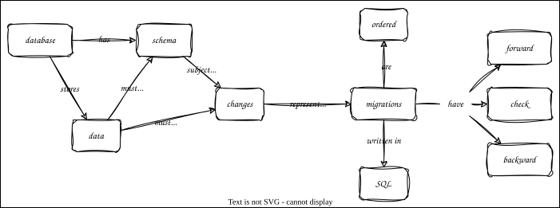

Database Migration
Overview

Outline
- A database migration is a change to the structure of a database
- Versus a change to its contents
- Use tools like sqitch to manage these
- Each change has three parts
- Forward: make the desired change
- Check: make sure it happened
- Backward: undo it (after checking that it was done)
migrate.pylooks for files with structured names- Forward:
NN_fwd_mnemonic.sql(NNis sequence number,mnemonicis long meaningful name) - Check:
NN_check_mnemonic.sql - Backward:
NN_bwd_mnemonic.sql
- Forward:
- Example
- Keep these files in version control